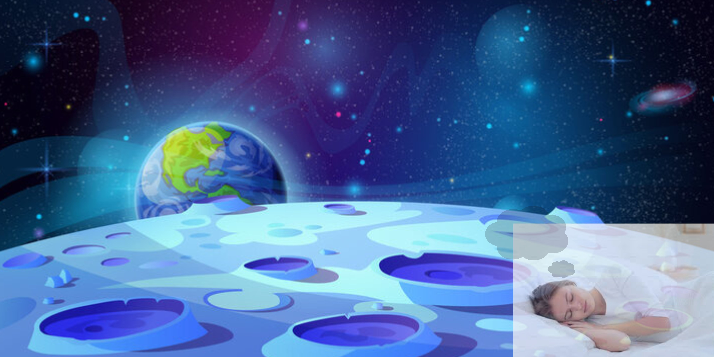

What Is REM?
REM or rapid eye movement is the final stage of the sleep cycle. This stage makes up about 25% of our sleep cycle and it takes around 60 mins on adverage. The REM sleep is considered to be our dream state. When you enter REM your breathing increases, our eyes move(hince the name), and our mucles become temporarily paralyzed. our brain activity increases because of us dreaming almost as high as if we were awake. The sleep cycle repeats multiple times a night and the more time you enter the REM sleep the more the vivid the dreams get. The reason you get Sleep Paralysis is because our N1 stage and our REM stage overlap. In N1 you can easily be woken up but, you body is still paralyzed from the REM stage. Your brain is still active but your body is "asleep" and if this ever happend to you, you know that you can only move your eyes and breath. This is because these are the only mucles that don't get paralyzed.
Why Do We Dream?
Dreams are thoughts, emotions, and images that we see while we sleep. We can't controle when or where we dream since its our body's way of processing thoughts. Some dreams can even make you feel real emotion like crying,laughing,etc. According to the UPMC medical hospital they state,"Scientists do not know much about how or why we dream. [And] Sigmund Freud, who greatly influenced the field of psychology, believed dreaming was a "safety valve" for unconscious desires." Dreaming can also be a way for us to process different trama responses. One study found that people with PTSD is more likely to experience nightmares Dreams are considered a representation of our imagination so if yours is more vivid then your dreams will probably be as well. Also you can dream in other states of your sleep cycle but it is very uncommon.
Why Don't We Remember Our Dreams?
Our brain's during this dream state isn't set up to make long turm memories. Since dreams are our imagination the brain isn't in a state where we are both processing and creating memories. Some consolidation does happen during REM sleep but not much. If you were to wake up or be woken up during this stage you might be able to remember what was happening, its why when we have nighmares we can remember them in great detail. Studies have shown that younger people are able to remember their dreams better then older poeple. Around the age of 4 or 5 a child will start to have more vivid dreams until their early 20's after that it will start to decline and steady throughout the rest of adulthood. If you are more introverted you are more likely to remember your dreams vs if you are more extrroverted you will be less likely. You will be more likely to remember your dreams if you took a few seconds to write them down and process what you seen once you wake up.
Whether your going to sleep or just waking up it is important to remember that no matter what you do or what you dream we can all use a good nights rest. Let all the stress of today and tommorrow flow away, let your muscles relax and have a nice drink of water. Just know that when we need to sleep please do so with the newfound knowledge you learned. And with that being said: